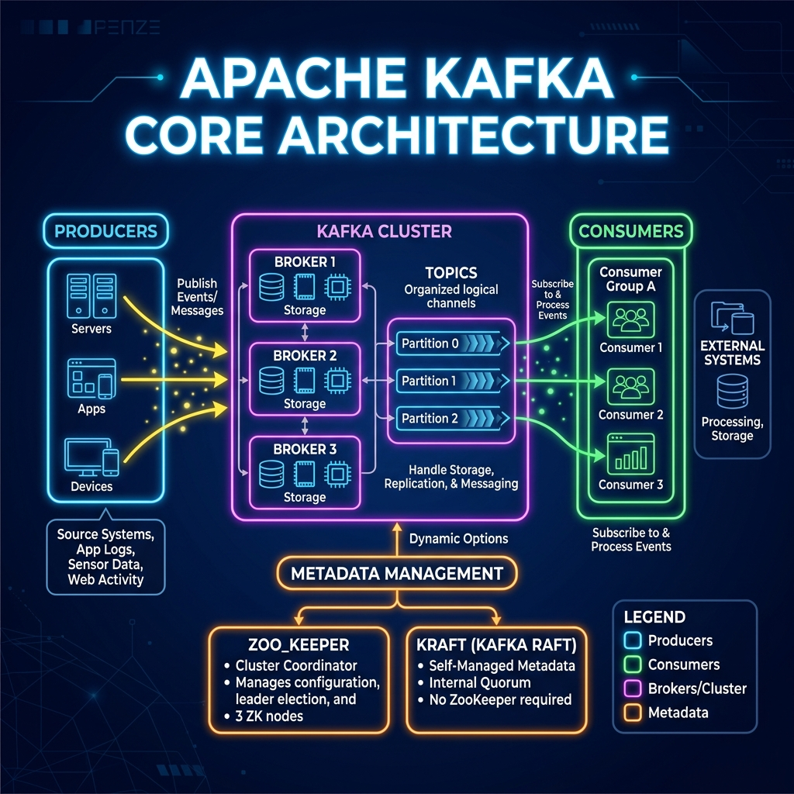

To master Apache Kafka, you must first understand the building blocks that make it work. Kafka has its own vocabulary of brokers, topics, producers, and consumers. In this article, we'll break down these core terms and explain what each component does in a simple, memorable way.

Think of a Kafka system as a community library system:
- Broker: The library building itself. A cluster is a network of library branches.
- Topic: A specific genre shelf, like "Mystery Novels."
- Partition: Sub-sections of the shelf (e.g., Mystery authors A-G, H-P, Q-Z) so multiple visitors can browse without crowding.
- Producer: The authors who write new books and mail them to the library.
- Consumer: The readers who come to borrow and read the books.
- Offset: A bookmark that tells each reader exactly which page they left off on.
Deep Dive into the Core Components
1. Broker
A Broker is simply a Kafka server. Its primary job is to receive messages from producers, write them to disk, and serve them to consumers. A group of brokers working together is called a Kafka Cluster.
2. Producer
A Producer is any client application that sends data into the Kafka cluster. For example, a web server tracking page clicks or a billing system generating receipts.
3. Consumer & Consumer Group
A Consumer reads data from Kafka. Multiple consumers reading related datasets form a Consumer Group. Kafka coordinates them so that different members read different partitions, preventing duplicate processing.
4. Topic
A Topic is a channel or folder name where records are published. Topics are always multi-subscriber, meaning many consumers can read from the same topic independently.
5. Partition
Topics are divided into Partitions. A partition is an ordered, immutable sequence of records. Partitions are the key to Kafka's speed: because topics are divided into parts, Kafka can spread these parts across different brokers, allowing multiple machines to read and write in parallel.
6. Offset
Every message inside a partition is assigned a unique, sequential number called an Offset. Offsets are strictly sequential (0, 1, 2, 3...) and help consumers keep track of what they have already read.
7. ZooKeeper / KRaft
A distributed system needs a manager to keep track of which brokers are alive and who is in charge. Historically, Kafka used ZooKeeper for this coordinator role. Modern Kafka versions use KRaft (Kafka Raft Metadata Mode), which builds this consensus system directly inside Kafka brokers for faster recovery and less operational complexity.
Conclusion
By splitting data into Topics, spreading them across Brokers in parallel Partitions, and tracking reading status via Offsets, Apache Kafka achieves incredible performance. Next time you work with Kafka, remember this library system coordinates millions of messages a second using these simple building blocks.